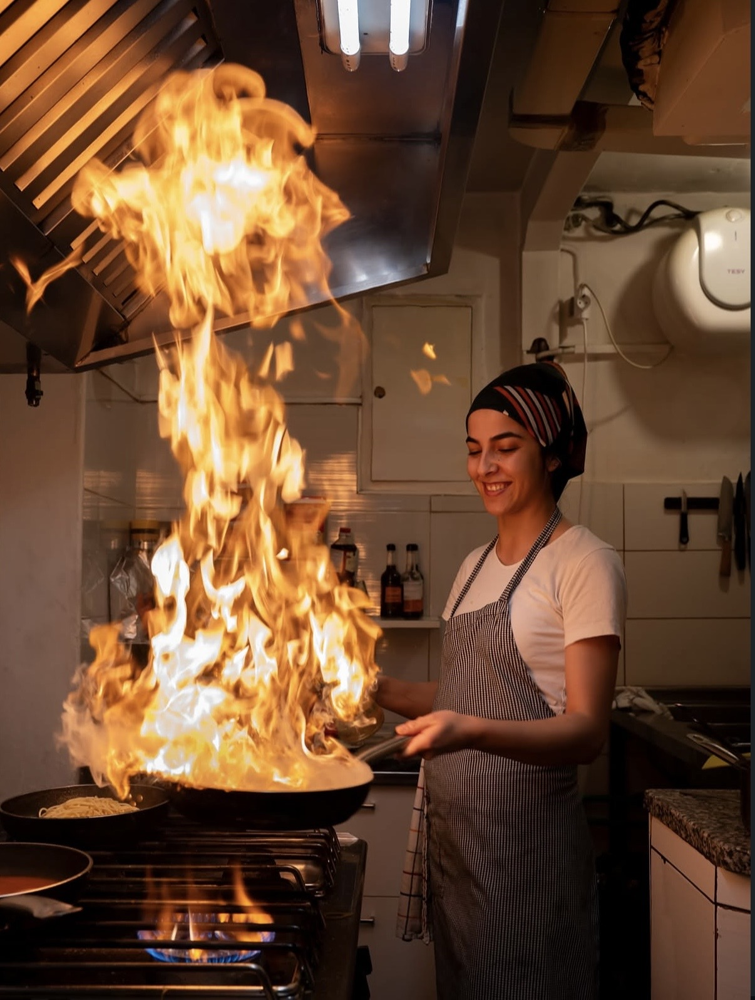
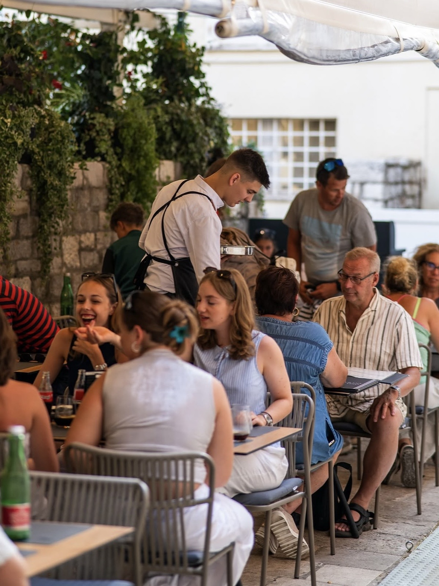
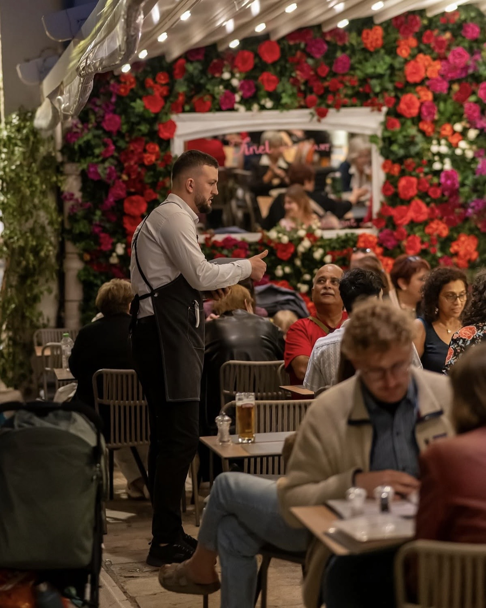

Naša priča
Restoran Tinel otvoren je u srcu starog grada Zadra s jednom misijom — donijeti autentičan okus dalmatinske tradicije na vaš stol.
Godinama gradimo kuhinju koja poštuje sezonalnost, lokalnost i tradiciju. Svako jutro biramo najsvježije namirnice.

Naš tim



Vizija i misija
Naša vizija je čuvati dalmatinsku gastronomsku tradiciju i prilagoditi je modernim ukusima.
Želimo biti mjesto dobrih uspomena i vrhunske hrane.

Radno vrijeme
| Dan | Ručak | Večera | Ponuda |
|---|---|---|---|
| Ponedjeljak | 12:00 — 15:00 | 18:00 — 23:00 | Juha dana gratis |
| Utorak | 12:00 — 15:00 | 18:00 — 23:00 | — |
| Srijeda | 12:00 — 15:00 | 18:00 — 23:00 | Degustacijski menu |
| Četvrtak | 12:00 — 15:00 | 18:00 — 23:00 | — |
| Petak | 12:00 — 15:30 | 18:00 — 24:00 | Živa glazba |
| Subota | 12:00 — 16:00 | 18:00 — 24:00 | Živa glazba |
| Nedjelja | 12:00 — 16:00 | 18:00 — 22:00 | Nedjeljna peka |